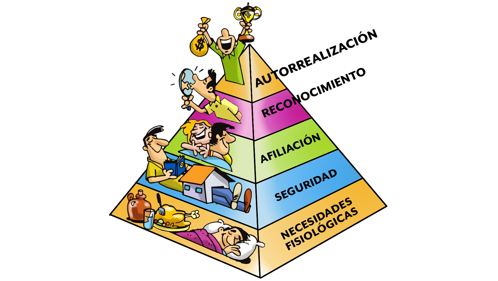

Consiste en las acciones que toman las personas para desarrollar sus destrezas y habilidades, lo cual les permite mejorar sus relaciones interpersonales y su toma de decisiones. De manera sencilla, es la maravillosa capacidad humana de cambiar en busca de ser más felices y plenos.

Existen 5 niveles en la pirámide de Maslow. Abajo los encontrarán en orden de prioridad:
Fisiología: son las motivaciones fisiológicas fundamentales para la vida, como el aire fresco, la alimentación, el agua, la temperatura.
Seguridad: la necesidad de sentirnos seguros y a salvo, garantizar nuestro bienestar físico, tener un techo o refugio para protegernos o un empleo.
Pertenencia: pertenecer a un grupo o comunidad, país, sociedad o familia.
Estima: el respeto propio, la seguridad y la confianza hacia nosotros mismos y el reconocimiento y el valor que nos dan los demás, como el ser famosos, dignos o respetados.
Autorrealización: es el escalón más alto de la pirámide, es aquí donde se encuentra la plenitud y felicidad más grande. Recién cuando todos los demás escalones están satisfechos, una persona se encuentra en su estadío más pleno.